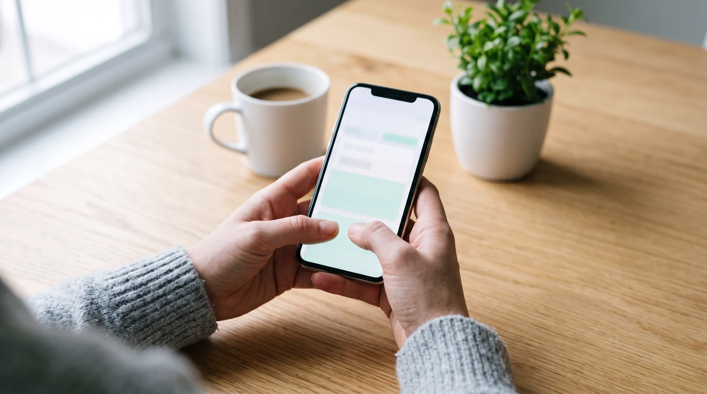

How getting a GLP-1 prescription online works
You complete an online intake, a licensed clinician reviews it and decides whether to prescribe, and if they do, a pharmacy prepares the medication and ships it to you. In a few states the first prescription requires a live video visit. A prescription is not guaranteed.

It starts with an online intake
Getting a GLP-1 prescription online follows the same order as getting one in person. A clinician reviews you first, and a pharmacy fills second. The difference is that the review happens through telehealth.
You pick a program and complete a secure online intake about your goals, health history and medications. The intake runs on our telehealth partner's pages, on a HIPAA-compliant platform, not on this website.
Velacore lists three GLP-1 programs: Semaglutide, Tirzepatide and Microdosing GLP-1. Every one is prescription only.
The semaglutide and tirzepatide programs are for adults 18 to 74 with a body mass index of 27 or above, or 25 or above with a related health condition. The microdosing program is for adults 18 to 74 with a body mass index over 20.
A licensed clinician reviews it and decides
A physician or nurse practitioner licensed in your state reviews your intake. The licensed clinician makes the prescribing decision, based solely on clinical judgment. Velacore coordinates access and education and has no say in that decision.
The clinicians are independent providers, engaged through our telehealth services partner. They are credentialed, background checked and covered by malpractice insurance before they review intakes. Clinician hours are 7am to 7pm Central Time.
A prescription is not guaranteed. Prescriptions are issued only when clinically appropriate. If the clinician does not prescribe, nothing is ordered and your program payment is refunded in full.
When a video visit is required
People often search for a GLP-1 online with no video visit. At Velacore, that depends on the state you live in.
Most reviews happen without a live appointment. A video visit is required for the first prescription in Arkansas, the District of Columbia, Delaware, Kansas, Mississippi, New Mexico, Rhode Island and West Virginia.
Everywhere else, a video visit is optional. You can request one at any time at no extra cost.
A pharmacy fills the prescription
If the clinician prescribes, a licensed 503A compounding pharmacy prepares your medication and ships it to your door. Shipping is included, and ongoing plans ship every four weeks.
Compounded medications are not FDA approved and are not reviewed by the FDA for safety or efficacy.
For the semaglutide and tirzepatide programs, baseline labs are ordered through a national laboratory at no cost to you. In most cases you can start medication before the lab work is back, and the clinician reviews it at your first monthly check-in.
After that, the clinician reviews your progress each month until your dose is steady, then quarterly.
Paying without insurance
Programs are paid out of pocket and are not billed to insurance. The price you see is the whole price. There is no separate consultation or physician fee, and shipping is included.
Accepted payment methods are Visa, Mastercard, FSA and HSA cards, Apple Pay and Google Pay. American Express is not accepted.
You can cancel at any time for any reason. You can request a refund for any month whose medication has not yet been ordered. The full terms are in the refund policy.
What telehealth cannot do
- It cannot promise a prescription. Starting a visit is not a guarantee of treatment.
- It cannot handle an emergency. If you are experiencing a medical emergency, call 911 or go to the nearest emergency room.
- It cannot skip the prescription. The FDA lists a website that does not require a prescription as a warning sign of an unsafe online pharmacy.
- It cannot take a medication back. Medications are non-returnable once dispensed, as required by federal and state pharmacy law.
The FDA also advises patients to get a prescription from their doctor and fill it at a state-licensed pharmacy.
Patient support is available 24 hours a day, every day, and you can message your clinician or request a video visit through your patient portal.
Common questions
Can I get a GLP-1 prescription online without a video visit?
In most states, yes. Most reviews happen without a live appointment. A video visit is required for the first prescription in Arkansas, the District of Columbia, Delaware, Kansas, Mississippi, New Mexico, Rhode Island and West Virginia.
Can I get a GLP-1 online without insurance?
Insurance is not needed. Programs are paid out of pocket and are not billed to insurance.
Will I definitely get a prescription?
No. A prescription is not guaranteed. If the clinician does not prescribe, nothing is ordered and your program payment is refunded in full.
Which states are covered?
All 50 US states and the District of Columbia. Every prescription requires review by a clinician licensed for your state.
Sources
This article is general education, not medical advice. Compounded medications are not FDA approved and are not reviewed by the FDA for safety or efficacy. Whether any treatment is appropriate for you is decided solely by a licensed clinician.